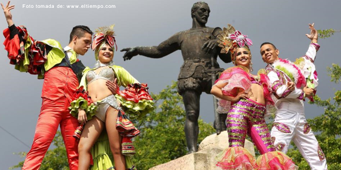
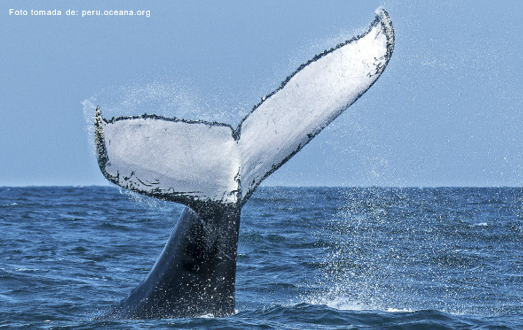
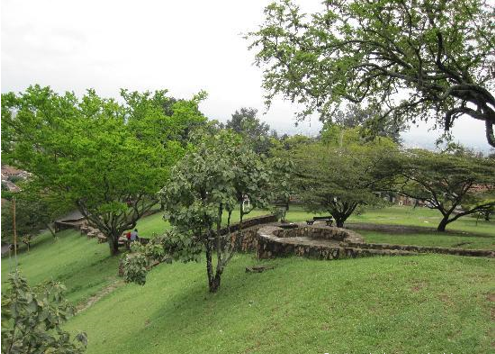
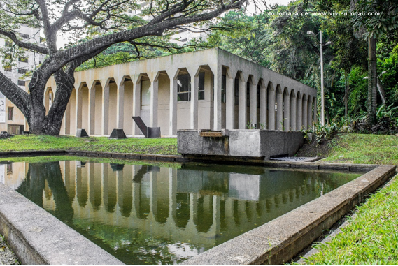
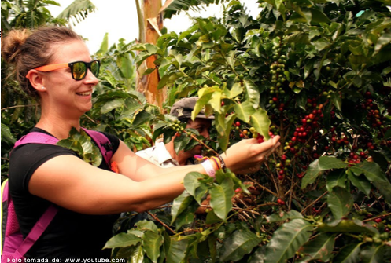

Lo Imperdible
Si buscas diversión, en Cali la tienes asegurada y no es para menos, en una ciudad que se ha ganado los títulos de "La capital mundial de la salsa" o "La sucursal del cielo". Si estas en Cali, no te pierdas la oportunidad de recorrer el barrio San Antonio ni de visitar el monumento de Cristo Rey un lugar increíble que ofrece una vista panorámica de la ciudad.

•Visitar el monumento de Cristo Rey: Si pasabas por Cali de visita es necesario que vayas a visitar el gran monumento de Cristo Rey, un lugar increíble que ofrece una vista panorámica de la ciudad, el cual tiene en su cima una efigie de 26m de altura con los brazos abiertos muy parecido al Cristo Redentor en el Corcovado de Río de Janeiro (Brasil).

•Aventura en el rio San Cipriano: Este pequeño pueblito, se encuentra en la mitad de la selva tropical pacífica. San Cipriano es reconocido localmente como un destino turístico y una reserva natural, caracterizado por la belleza exótica del río que lo recorre, tan cristalino como ninguno.

•Zoológico de Cali: No te puedes ir sin conocer uno de los zoológicos más dotados del país, el cual se encuentra ubicado sobre el río de Cali al oeste de la ciudad. El zoológico tiene hábitats que alojan más de 800 animales de 170 especies, el 80% de ellas colombianas, sin dejar de lado los acuarios y el mariposario.

Eco parque de las garzas: Es un lugar muy hermoso en el perímetro urbano, para enseñarle a los niños la importancia del medio ambiente y su cuidado, una reserva urbana en donde se puede pasar un buen rato, hacer picnic, conocer de nuestro ecosistema, y por supuesto ver algunas de las más hermosas aves Colombianas, cabe decir que es un paseo apto para todas las edades.

Granja de las mariposas ANDOKE: A tan solo 20 minutos desde el centro de la ciudad, un lugar único que representa una experiencia bastante inusual, encantadora y educativa para sus visitantes. Disfruta del paisaje de Cali desde su zona rural, el viento que desciende desde las montañas, el canto de aves, más de 15 especies nativas de mariposas con todas sus plantas y demás necesidades ambientales.

Feria de Cali: De las fechas más especiales para celebrar en Cali es su Feria, las fiestas especiales la cual es celebrada anualmente desde 1957 que se lleva a cabo entre el 25 y el 30 de diciembre. De sus eventos a resaltar y más importantes son el Salsódromo y el llamado Súper concierto, durante sus eventos llegan a participar orquestas locales, nacionales e internacionales, representativas de todos los ritmos tropicales y bailables.

Las ballenas jorobadas de julio a octubre: Las playas de acantilados y bahías se convierten en escenarios naturales para presenciar este espectáculo único, cada año de Julio a Octubre es el tiempo durante el cual las ballenas vienen a tener sus crías, les enseñan cómo sobrevivir y procrear con un hombre adulto; madre e hija jugarán mientras la más pequeña aprende a maniobrar su cuerpo con sus grandes aletas. Las condiciones te darán la oportunidad de disfrutar de cómo estos hermosos mamíferos emergen del fondo del océano para actuar para quienes las van a ver, aleteando y haciendo saltos

Parque de San Antonio: Para pasar un rato agradable ya sea en familia o con amigos, este parque es muy frecuentado por extranjeros y turistas de otras partes del país, lleno de comida típica y artesanías de la ciudad, lo que vivirás allí es una experiencia de relajación y contacto con la naturaleza.

Museo de la tertulia: Al lado del obelisco encontraras el hermoso museo de la Tertulia, que tiene las mejores exposiciones para el gusto de sus visitantes, el museo se encuentra en la Avenida Colombia, en la rivera de Río Cali. Puede uno aprovechar para caminar a la orilla del Río y visitar el museo.

Coffee Tour: ¿Por qué es tan popular el café de Colombia? En un futuro el aroma y cada sorbo de café que toque tu paladar te hará evocar este momento vivido, haciéndote entender el porqué de esa pregunta siempre, todo lo que hay detrás de una buena taza de café colombiano y para saber más en el Tour de café de Cali conocerás sobre la historia del café y cómo llego a tierras colombianas. Visitaras una típica finca cafetera donde podrás ver tierras privilegiadas que reúnen plantaciones de 7 tipos de cafetos en diferentes etapas de desarrollo. Vivirás la experiencia de recolectar o hacer selección de este y veras paso a paso el proceso completo.